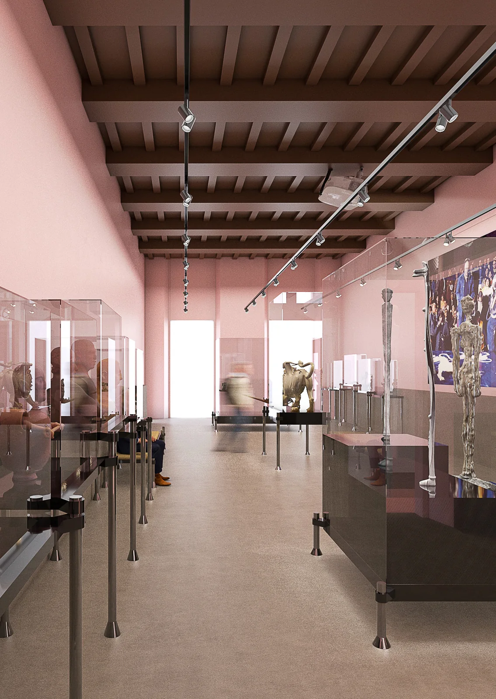
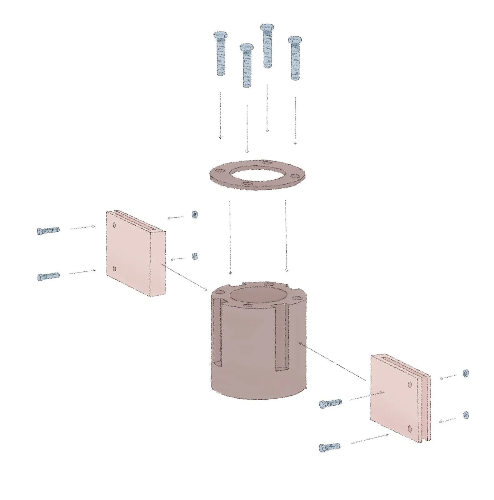
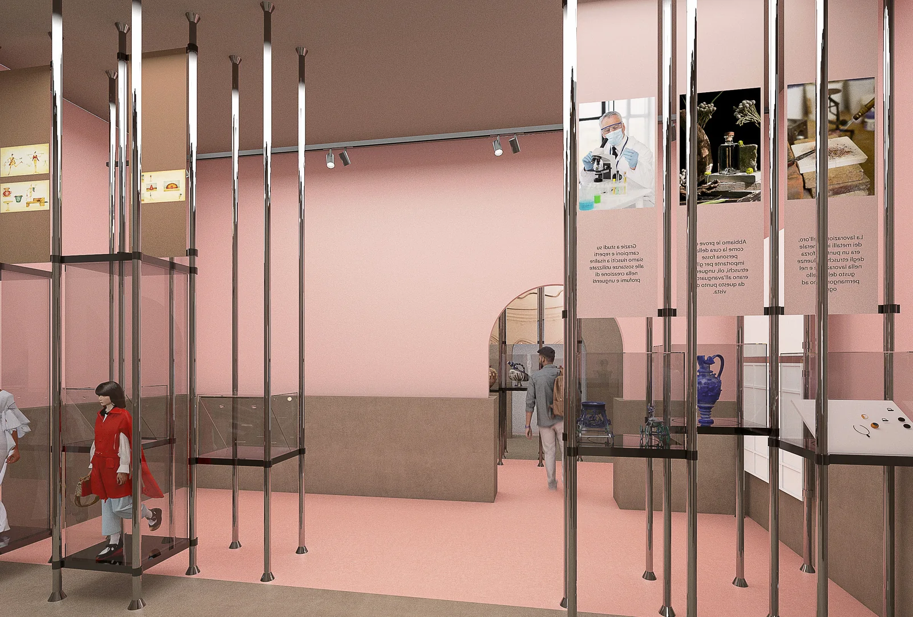
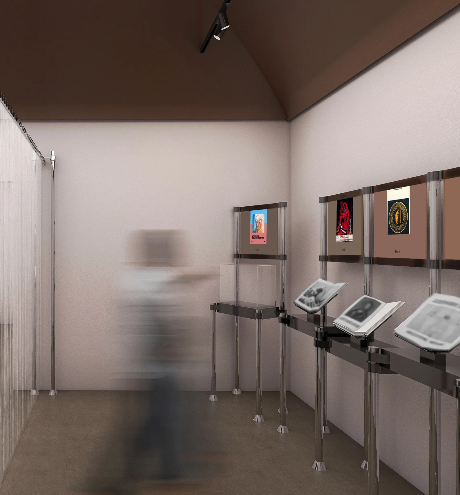
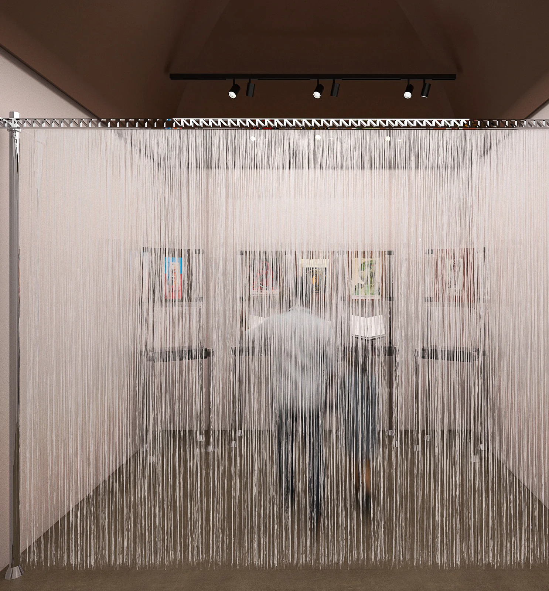

OLTRE ETRUSCO
Attraversare un confine. Poi un altro.
- Corso
- Laboratorio di Design degli Interni I4 · Allestimento
- Sede
- Politecnico di Milano · A.A. 2024/25
- Docenti
- Raffaella Trocchianesi, Anna Mazzanti
- Tema
- Arte & Design · Narrazioni allestitive
- Sistema
- Sistema espositivo Oltre
- Gruppo
- Filippo Antonio Visentin, Anton Qerkini, Noè Bartolini, Jacopo Dellanoce, Luca Mastromatteo
- Ambito
- Exhibition design · Cultura · 2025

Può un allestimento cambiare il nostro modo di attraversare una storia?
Mi interessa il confine quando diventa una possibilità: orientare il visitatore e poi lasciargli libertà.
Un percorso espositivo che interpreta lo sconfinamento tra passato e presente. Da una sequenza guidata a uno spazio libero, i limiti si dissolvono progressivamente e cambiano il modo di incontrare i reperti.
Il sistema Oltre usa strutture metalliche modulari e supporti regolabili. La progressione delle sale accompagna il visitatore da un percorso obbligato a una scoperta più autonoma, fino a soglie leggere e tende.
Lo sconfinamento come regola
Oltre Etrusco mette in relazione passato e presente attraverso il tema dello sconfinamento. Il percorso non è una sequenza neutra di oggetti: cambia il grado di libertà del visitatore. Nella prima sala il limite indica dove passare; nelle successive la struttura si apre e la lettura diventa più personale.


Dal percorso alla scoperta
La seconda sala interrompe progressivamente i confini e la terza distribuisce gli elementi nello spazio. La sala dedicata alla Tomba degli Auguri introduce un altro momento del racconto; le sale finali e il corridoio lavorano con soglie più leggere e tende. Le piante permettono di seguire questa progressione stanza per stanza.
Una struttura che si adatta
Oltre è un sistema di strutture metalliche modulari con supporti regolabili. L’esploso descrive come le parti costruiscono l’insieme; i dettagli mostrano il passaggio dalla regola spaziale al dispositivo che sostiene e presenta i reperti. La flessibilità del sistema rende possibili configurazioni differenti lungo il percorso.

Processo — immagini e disegni
5 immagini
F.04Sala 2 — confini permeabili 
F.05Sala 4 — il limite 
F.06Sala 4 — attraversamento 
F.07Schizzo — lo spazio aperto 
F.08La sequenza delle sale